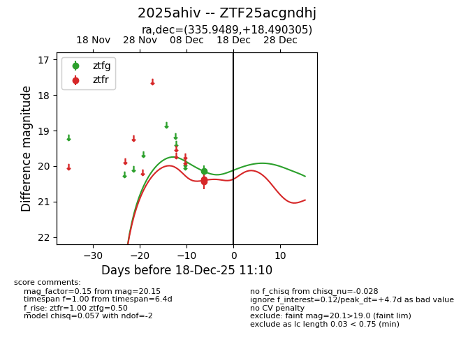
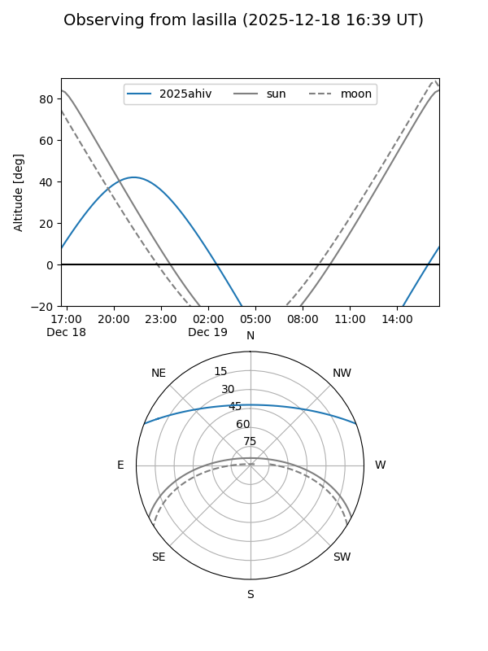
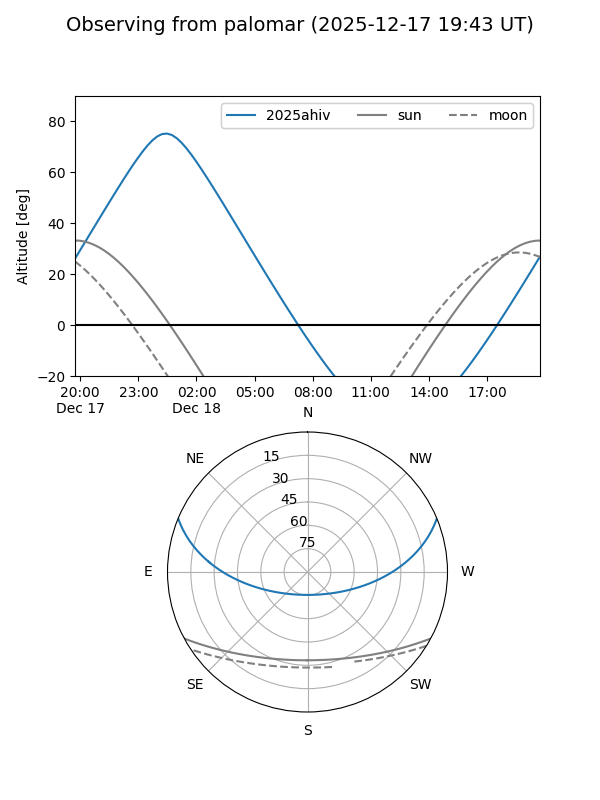
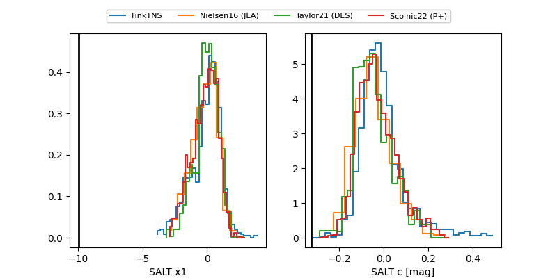

2025ahiv
Target 2025ahiv at 2025-12-21 02:43
Aliases and brokers:
FINK: fink-portal.org/ZTF25acgndhj
Lasair: lasair-ztf.lsst.ac.uk/objects/ZTF25acgndhj
ALeRCE: alerce.online/object/ZTF25acgndhj
TNS: wis-tns.org/object/2025ahiv
YSE: ziggy.ucolick.org/yse/transient_detail/2025ahiv
alt names
ZTF25acgndhj (ztf,fink_ztf)
2025ahiv (tns,yse)
Coordinates:
equatorial (ra, dec) = 335.9489,+18.49030
equatorial (HMS+DMS) = 22:23:47.73,+18:29:25.10
galactic (l, b) = (80.7266,-32.02323)
Flags:
Photometry:
last ztfg=20.10, ztfr=20.13
2 ztfg, 3 ztfr detections
Lightcurve

Visibility


Additional plots
